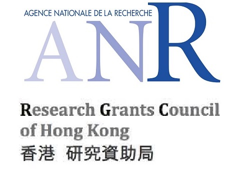

Jingcai Guo (郭径材)
Research Assistant Professor
Ph.D., MIEEE, MACM, MCCF
Faculty of Engineering
The Hong Kong Polytechnic University
Office:PQ 509, PQ Wing, PolyU, Kowloon, Hong Kong SAR.
Email:[jingcai.guo AT gmail.com]
^_^ I am joining The Hong Kong Polytechnic University as a Research Assistant Professor in the coming fall.
Short Bio
Dr. Guo received his Ph.D. degree from The Hong Kong Polytechnic University (香港理工大学), supervised by Prof. Song Guo. Before that, he received the M.E. degree from Waseda University (早稻田大学), supervised by Prof. Furuzuki Takayuki, and B.E. degree from Sichuan University (四川大学), all in Computer Science. From 2021 to 2022, he was an Associate Professor with School of Computing and Artificial Intelligence, Southwestern University of Finance and Economics (西南财经大学), and from 2019 to 2020, he was a Visiting Researcher with University of Sydney (悉尼大学), hosted by Prof. Dacheng Tao.
His research interest broadly lies in the areas of multimedia and artificial intelligence. Some specific topics such as zero-shot learning, federated learning, computer vision, cyber-security, and smart transportation are highly involved. He has served as the Publicity Chair for the 41st International Symposium on Reliable Distributed Systems (SRDS 2022), and has regularly served as program committee member and/or reviewer for several prestigious conferences and journals such as ACM-MM, AAAI, CVPR, NeurIPS, ICML, ICME, ECCV, IJCNN, IEEE TNNLS, IEEE TMM, IEEE TKDE, IEEE IoTJ, IEEE TII, IEEE TETC, etc. He is a member of IEEE, ACM, and CCF. He is the recipient of the Hong Kong Ph.D. Fellowship (H.K. government funded, 2017).
Education Background
-
Ph.D.: The Hong Kong Polytechnic University, Sep. 2017 - Dec. 2020
Supervisor: Prof. Song Guo, IEEE Fellow.
Thesis Title: Learning Robust Visual-semantic Mapping for Zero-shot Learning.
Committees: Prof. Song Guo (PolyU, IEEE Fellow), Prof. Baochun Li (UToronto, IEEE Fellow), Prof. Qingfu Zhang (CityU, IEEE Fellow), Prof. Xiapu Luo (PolyU).
-
M.E.: Waseda University, Sep. 2013 - Sep. 2015
Supervisor: Prof. Furuzuki Takayuki.
Thesis Title: An Improved Incremental Training Approach for Support Vector Machine.
Committees: Prof. Furuzuki Takayuki (WasedaU), Prof. IWAIHARA Mizuho (WasedaU) and Prof. KAMATA Sei-ichiro (WasedaU) - B.E.: Sichuan University, Sep. 2009 - Jun. 2013
Working Experience
-
Research Assistant Professor: Department of Computing, The Hong Kong Polytechnic University , Sep. 2022 - Now.
-
Associate Professor: School of Computing and Artificial Intelligence, Southwestern University of Finance and Economics , May. 2021 - Jun. 2022.
-
Visiting Researcher: School of Computer Science, University of Sydney , Sep. 2019 - Apr. 2020.
Selected Papers
-
[IJCAI] Personalized Federated Learning with Contextualized Generalization,
X. Tang, S. Guo*, J. Guo*.
International Joint Conference on Artificial Intelligence (IJCAI '22), Vienna, Austria, 2022.
(CCF-A Rank, H5-index=95).
[BibTeX] [EndNote]
-
[TNNLS] Conservative Novelty Synthesizing Network for Malware Recognition in an Open-set Scenario,
J. Guo, S. Guo, S. Ma, Y. Sun, and Y. Xu.
IEEE Transactions on Neural Networks and Learning Systems (TNNLS).
(JCR-Q1/中科院1区, IF=14.255, Early Access).
[BibTeX] [EndNote]
-
[USENIX-ATC] INT8 Training with Loss-aware Compensation and Backward Quantization for Tiny On-device Learning,
Q. Zhou, S. Guo, Z. Qu, J. Guo, Z. Xu, J. Zhang, T. Guo, B. Luo, and J. Zhou.
USENIX Annual Technical Conference (USENIX ATC '21), virtual conference, 2021.
(CCF-A Rank, H5-index=45).
[BibTeX] [EndNote]
-
[IoT-J] On-device Learning Systems for Edge Intelligence: A Software and Hardware Synergy Perspective,
Q. Zhou, Z. Qu, S. Guo, B. Luo, J. Guo, Z. Xu, and R. Akerkar.
IEEE Internet of Things Journal (IoTJ).
(JCR-Q1/中科院1区, IF=10.238).
[BibTeX] [EndNote]
-
[ACM-MM] Dual-view Attention Networks for Single Image Super-Resolution,
J. Guo, S. Ma, J. Zhang, Q. Zhou, and S. Guo.
ACM International Conference on Multimedia (ACM MM '20), Seattle, WA, USA, 2020.
(CCF-A Rank, H5-index=58).
[BibTeX] [EndNote]
-
[TMM] A Novel Perspective to Zero-shot Learning: Towards an Alignment of Manifold Structures via Semantic Feature Expansion,
J. Guo and S. Guo.
IEEE Transactions on Multimedia (TMM).
(JCR-Q1/中科院1区, IF = 8.182, DOI: 10.1109/TMM.2020.2984091).
[BibTeX] [EndNote]
-
[ICASSP] Adaptive Adjustment with Semantic Feature Space for Zero-Shot Recognition,
J. Guo and S. Guo.
IEEE International Conference on Acoustics, Speech, and Signal Processing (ICASSP '19), Brighton, United Kingdom, 2019.
(CCF-B Rank, H5-index=86).
[BibTeX] [EndNote]
-
[ICASSP] EE-AE: An Exclusivity Enhanced Unsupervised Feature Learning Approach,
J. Guo and S. Guo.
IEEE International Conference on Acoustics, Speech, and Signal Processing (ICASSP '19), Brighton, United Kingdom, 2019.
(CCF-B Rank, H5-index=86).
[BibTeX] [EndNote]
-
[ICME] AMS-SFE: Towards an Alignment of Manifold Structures via Semantic Feature Expansion for Zero-shot Learning,
J. Guo and S. Guo.
IEEE International Conference on Multimedia and Expo (ICME '19), Shanghai, China, 2019.
(CCF-B Rank, H5-index=30).
[BibTeX] [EndNote]
-
[BDCAT] An improved incremental training approach for large scaled dataset based on support vector machine,
J. Guo*.
IEEE/ACM International Conference on Big Data Computing, Applications and Technologies (BDCAT '16), Association for Computing Machinery, New York, NY, USA, 2016.
(EI).
[BibTeX] [EndNote]
In Peer Review
Some recent works are NOT shown due to the "Double-Blind Policy", the list will be updated frequentlyFunded / Participated Projects
-
Entity Anti-fraud Prediction Combining Zero-shot Learning and Graph Neural Networks,
Role: Principal Investigator (PI)
Funding Source: NSFC (National Natural Science Foundation of China)-62102327, CNY300,000.00 2022.01-2024.12. -
Learning-based Anti-fraud Prevention in Financial Industry
Role: Principal Investigator (PI)
Funding Source: Fundamental Research Funds for the Central Universities-JBK21YJ04, 2021. -
Learning Robust Visual-semantic Mapping for Zero-shot Learning,
Role: Principal Investigator (PI)
Funding Source: Hong Kong Research Grants Council, HKPFS-UGC/GEN/456/08,UGC/GEN/456/5/09, HKD890,000.00, 2017-2020. -
Edge Intelligence Oriented Resource Management and Deployment Optimization
Role: Participant.
Funding Source: NSFC (National Natural Science Foundation of China)-61872310, CNY640,000.00 2019-2022. -
Research on Cloud Edge Collaborative Learning Architecture and Key Optimization Theory
Role: Participant
Funding Source: Shenzhen Science and Technology Innovation Commission, Fundamental Research Project-JCYJ20200109142008673, CNY2,500,000, 2021-2023. -
Transnational Partnership for Excellent Research and Education in Big Data and Emergency Management
Role: Participant.
Funding Agency: NRC (Norwegian Research Council) INTPART (International Partnerships for Excellent Education and Research) Programme, 2017-2020.
Teaching
-
Instructor, Data Structures, Fall 2021.
-
Teaching Assistant, B2B & B2C E-commerce and Management, Spring 2019
-
Teaching Assistant, Information Systems Project Management, Fall 2018.
-
Teaching Assistant, Big Data Analytics, Spring 2018.
- Teaching Assistant, Web Advertising and Web Publishing, Fall 2017.
Academic Service
Conference Organizing Committee
- Publicity Chair: The 41st International Symposium on Reliable Distributed Systems (SRDS 2022)
- Session Chair: The 23th IEEE International Conference on Multimedia and Expo (ICME 2022)
Conference PC Member / Reviewer
- ACM International Conference on Multimedia (ACM-MM: 2022)
- AAAI Conference on Artificial Intelligence (AAAI: 2021, 2022, 2023)
- International Conference on Machine Learning (ICML: 2022)
- IEEE/CVF Conference on Computer Vision and Pattern Recognition (CVPR: 2022)
- Conference on Neural Information Processing Systems (NeurIPS: 2022)
- IEEE International Conference on Multimedia and Expo (ICME: 2019, 2020, 2021)
- European Conference on Computer Vision (ECCV: 2022 )
- International Joint Conference on Neural Networks (IJCNN: 2022)
- IEEE International Conference on Big Data Intelligence and Computing (IEEE DataCom: 2018)
Journal Reviewer
- Reviewer for IEEE Transactions on Neural Networks and Learning Systems (IEEE TNNLS)
- Reviewer for IEEE Transactions on Multimedia (IEEE TMM)
- Reviewer for IEEE Transactions on Knowledge and Data Engineering (IEEE TKDE)
- Reviewer for IEEE Internet of Things Journal (IEEE IoTJ)
- Reviewer for IEEE Transactions on Industrial Informatics (IEEE TII)
- Reviewer for IEEE Transactions on Emerging Topics in Computing (IEEE TETC)
- External Reviewer for ACM Transactions on Intelligent Systems and Technology (ACM TIST)
Editorial Board Member
- Progress in Human Computer Interaction (2018/06-2020/06)
Selected Honors
- Hong Kong Ph.D. Fellowship.
Acceptance rate ~= 1.7%, 231 out of 14000, Awarded by Hong Kong Research Grants Council, March 2017. - Ting Hsing International Scholarship.
Acceptance rate ~= 4.2%, 85 out of 2000, Awarded by Waseda University and Ting Hsin Holding Corp., June 2013.
Sponsors
I sincerely thank these sponsors for providing financial support for my research: